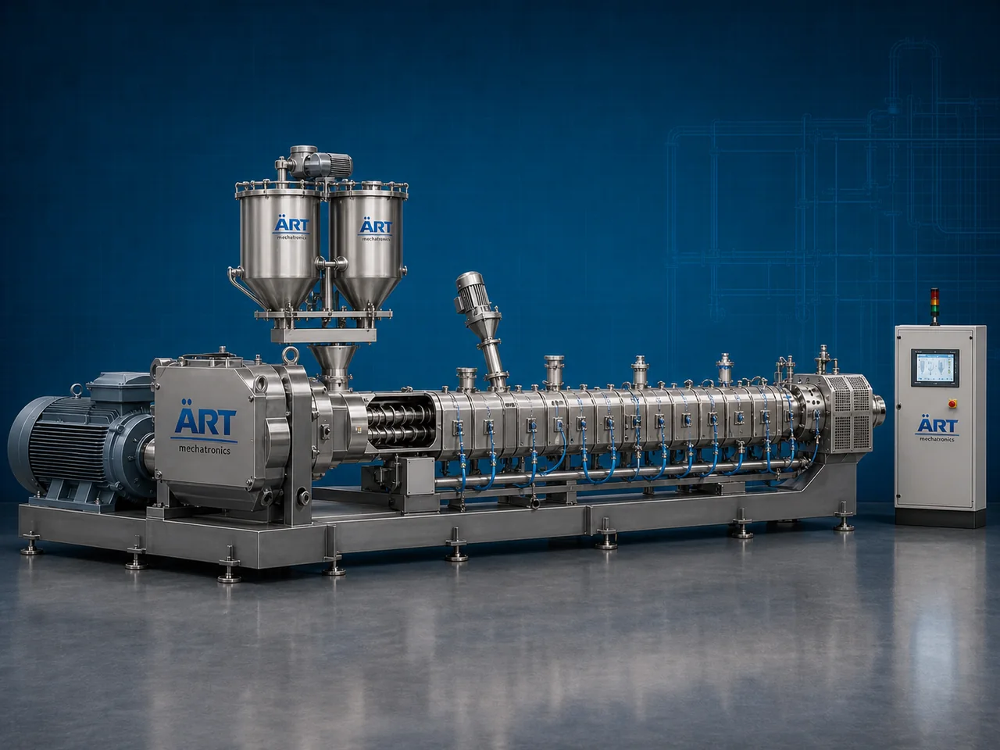

Extruder Machine (Industrial Extrusion System for Food, Plastic & Material Processing)
An Extruder Machine, also known as an Industrial Extrusion Machine, is a highly versatile system used for shaping, forming, and processing materials by forcing them through a die under controlled temperature and pressure.

About the Extruder Machine
Extruders are widely used in industries such as food processing, snack manufacturing, plastic processing, animal feed production, pharmaceuticals, and chemicals, where materials need to be converted into specific shapes, textures, or forms.
From puffed snacks and pasta to plastic pipes and pellets, extrusion technology enables continuous production, uniform quality, and high efficiency.
ART Mechatronics offers advanced extruder machines, engineered for precision control, high output, and reliable performance across multiple industries.
One machine, many names
Buyers search for this equipment under many terms — we manufacture all of them:
Working Principle of Extruder Machine
Raw material is fed into the machine through:
Inside the extruder:
Depending on application:
Material is forced through:
Types of Extruder Machines
Industries Using Extruder Machines
🍟 Food & Snack Industry
- Puffed snacks
- Pasta, noodles
🐟 Feed Industry
- Fish feed
- Animal feed
🧴 Plastic Industry
- Plastic products
- Pipes and sheets
💊 Pharma & Chemical Industry
- Granules
- Specialized materials
🌾 Agro Processing Industry
- Grain-based products
♻️ Recycling Industry
- Plastic reprocessing
Features & Advantages
✔ Continuous production process ✔ High efficiency and productivity ✔ Uniform product quality ✔ Versatile applications across industries ✔ Precise control over temperature and pressure ✔ Customizable dies for different shapes ✔ Energy-efficient operation
Technical Highlights
- Capacity: Custom (kg/hr to tons/hr)
- Screw Type: Single / Twin
- Heating System: Electric / Steam
- Construction: Mild Steel / Stainless Steel
- Control System: PLC-based (optional)
- Drive: Electric motor
Turnkey Extrusion Solutions
ART Mechatronics offers:
- Complete extrusion system design
- Machine selection based on application
- Integration with feeding, drying, and packaging systems
- Installation & commissioning
- After-sales service & AMC
Why Choose Art Mechatronics
- Expertise in extrusion technology
- Customized solutions for multiple industries
- High-performance and durable machines
- Advanced control systems
- Proven performance across applications
Applications
- Snack Manufacturing Plants
- Plastic Processing Units
- Feed Manufacturing Plants
- Food Processing Units
- Recycling Plants
Industries that use the Extruder Machine
Related Process Equipment machines
Get pricing & specs for the Extruder Machine
Share the product, target capacity, current process and plant location. These details help our engineers discuss the right machine or line configuration.
One partner, from design to start-up
ART Mechatronics designs, manufactures, installs and commissions your Extruder Machine solution with regional presence in India, UAE and Thailand.